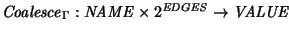
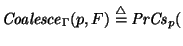
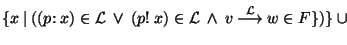
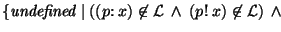
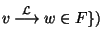
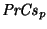
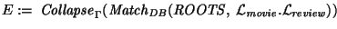
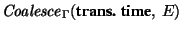

Several (virtual) edges may connect a pair of nodes. For example, two edges connect the pair of nodes in Figure 4. The first edge was added when the review began to be developed on 15/Mar/1998. The security was set to restrict the edge to page developers. By 25/May/1998, the edge was publicly released as part of the June issue and so the security was weakened to include paid subscribers.
When several edges connect a pair of nodes, information about a single property may be distributed among multiple labels. In order to determine the full extent of a property that (conceptually) pertains to a relationship between a pair of nodes, regardless of whether information about that property is distributed among a number of edges, it is advantageous to coalesce the property from the set of edges.
[

]Assume that a set of edges, F, connects the same pair of nodes. F is coalesced for a single property, p, as follows.




`2
The

operation is a property-specific constructor. Unlike the collapsing constructor, the coalescing constructor does not have to be a restrictor or mutator. Also, the result is not a label, but a single, coalesced value.following strategy can be used to determine the transaction time for the review of Star Wars IV by Videotastic, irrespective of the security, valid time, etc. First, find all the paths from a root to the review. Note that this requires a certain level of security. Second, collapse each path into a virtual edge. Finally, coalesce the transaction times of the virtual edges.
The result is {(&root, (trans. time: [15/Mar/1998 - uc]), &by Videotastic)}. The coalesced transaction time property, [15/Mar/1998 - uc], is the union of the two transaction time intervals in Figure 4.:= {(name! movie), (security: developer)}
:= {(name! review), (security: developer)}

